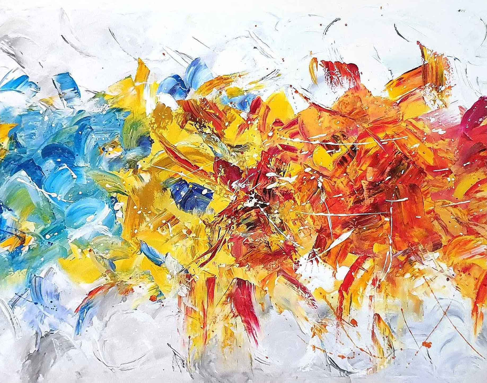
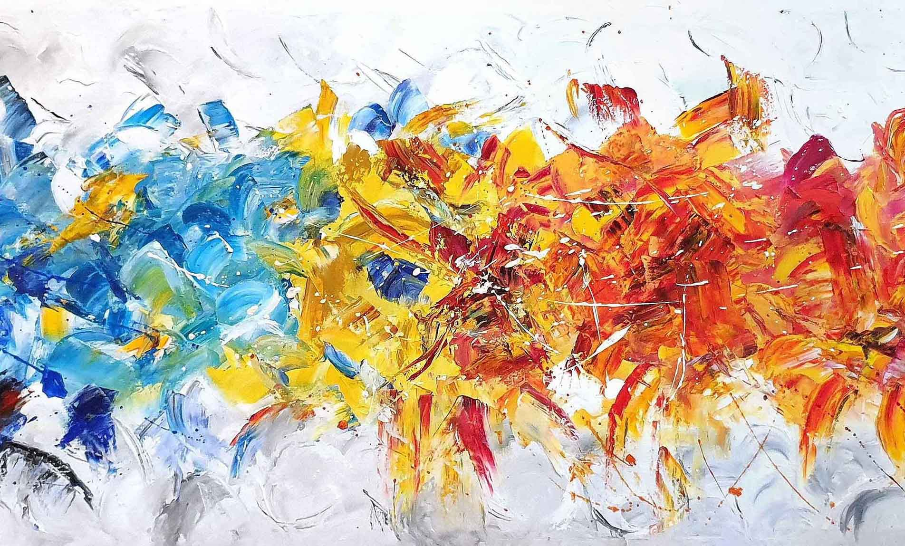
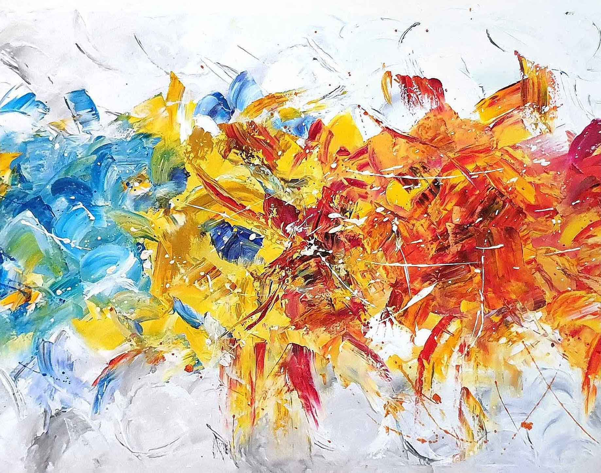
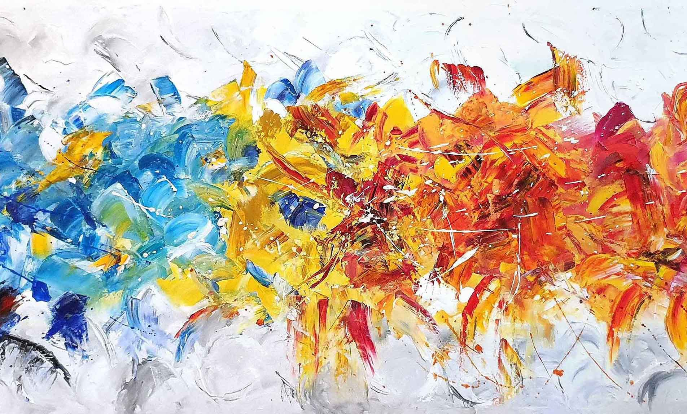

Dobrodošli!

Pozdrav dragi posjetitelju i dobrodošao u moj online atelje!
Drago mi je da s tobom ovdje mogu podjeliti djelić svog dugogodišnjeg rada. Želja mi je da ova stranica služi kao trajna galerija i nadahnuće svima koji ju posjete.
Od kada sam počela slikati pa sve do danas, kroz moj atelje prošlo je mnogo slika. Neke od njih imale su tu sreću da ostanu trajno zabilježene na brojnim fotografijama.
Njih i sve ostale koje će uz Božje nadahnuće još doći, želim objaviti u ovu virtualnu galeriju koja će se trajno proširivati novim radovima. Želim ti ugodan boravak u mom online ateljeu. Za sve upite i prijedloge uvijek sam na raspolaganju.
Astrid Pritišanac

Moje izložbe

Ja sam trs 2007
Moja prva izložba inspirirana stihovima iz Evanđelja po Ivanu 15.
Ja sam trs, vi loze. Tko ostaje u meni i ja u njemu, taj donosi mnogo roda. Uistinu, bez mene ne možete učiniti ništa." Ivan 15:5
Ljiljani 2011
Moja druga izložba inspirirana stihovima iz Evanđelja po Mateju 6.
"Promotrite poljske ljiljane, kako rastu! Ne muče se niti predu. A kažem vam: ni Salomon se u svoj svojoj slavi ne zaodjenu kao jedan od njih." Matej 6:28


Lopoči 2020
Moja prva virtualna izložba inspirirana lopočima Kopačkog rita

O nama

Astrid Pritišanac
Slikar, umjetnik, kreator
Astrid Pritišanac rođena je Osječanka gdje živi i radi do 1998. godine, kada s obitelji seli u Bilje, gdje joj priroda i blizina Kopačkog rita postaju nadahnuće koje je prisutno od ranog djetinjstva, kada se uz oca, također slikara, uči slikati.
Preseljenje je za Astrid prijelomni trenutak kada u prirodnom raju počinje intenzivno slikati, što kasnije prerasta u profesionalno slikarstvo.
Omiljeni motivi su joj Kopački rit, baranjsko-slavonski motivi te motivi Jadrana. Radi više tehnika, a najdraža joj je ulje na platnu i lesonitu. Izlaže na više skupnih izložbi. Njene slike ukrašavaju interijere diljem svijeta.
Branko Pritišanac
Pjesnik, fotograf, trgovac
Branko je Astridin suprug i srodna duša. Potpuno se posvetio potpori Astrid i rečeno njenim riječima: "Suprug mi je strog profesor, likovni kritičar, nabavljač, fotograf, ali prije svega umjetnik."
Još od mladih dana piše poeziju i fotografira. Slike Astrid direktno su inspirirane njegovim nebrojenim fotografijama.
Neke od njegovih pjesama objavljene su u našoj galeriji Pjesme


Galerija